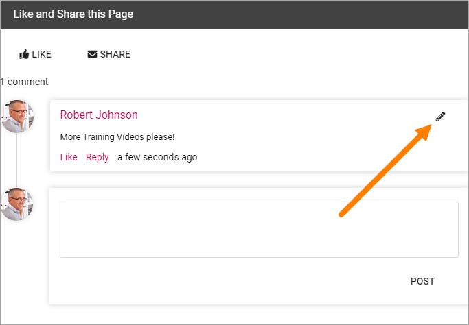
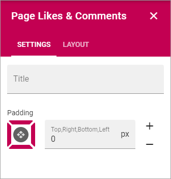

Page Likes and Comments¶
The block makes it possible for the end user to like and comment a specific web page. It is also possible to reply to comments. Besides that, users can Share the page with others by e-mail.

It is possible for the end user to edit and delete a comment, made by the user, by clicking the edit pen icon.
When a comment is deleted it works this way: If there are no answers to the comment it will just be removed. If there are answers, the comment will be replaced with a text that states that it has been deleted and by whom. Everyone can delete their own comments. A Site Collection administrator can delete any comment.
Settings for the block¶
In the settings you can add a Title for the block and add som Padding:
The Layout tab contains general block settings, see: General block settings
More on Likes and Comments¶
Users can like comments as well as pages.
A user can click the hand to see a list of the users that has liked the page or comment.
A user writing a comment can use mentions to send a message to someone, for example the author of the page (news page or other).
Note! Likes on comments does not affect trending in any way.